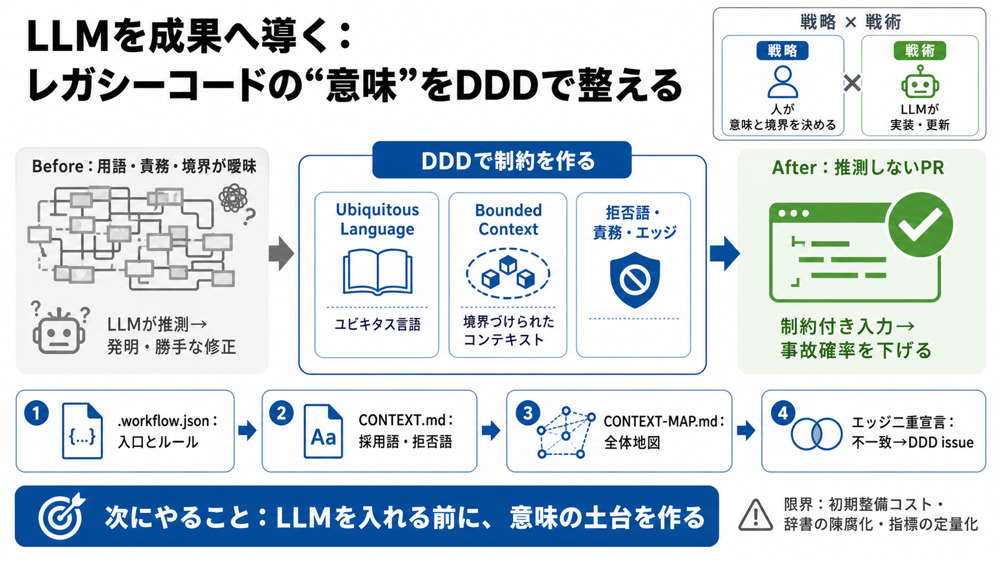

Automating Domain-Driven Design: Experience with a ...
The prompt guides the LLM to identify these bounded contexts and detail them, defining each context’s core purpose and k…

The prompt guides the LLM to identify these bounded contexts and detail them, defining each context’s core purpose and k…
In Conclusion The ubiquitous language is an important and strategic aspect of Domain Driven Design. It forms the corner…
Ubiquitous Language. Within a bounded context, use consistent terminology that a human domain expert would understand. F…
But this time, the team started with the domain. They locked themselves in a room with sticky notes and business experts…
The ubiquitous language should be reflected in the source code of the system, including the naming of variables, paramet…